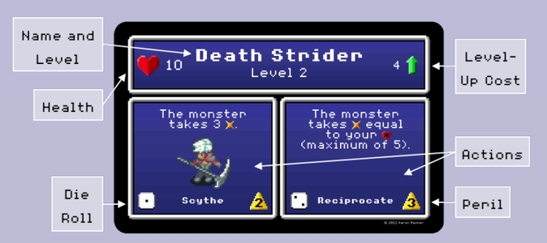
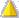
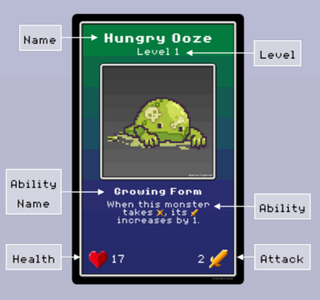
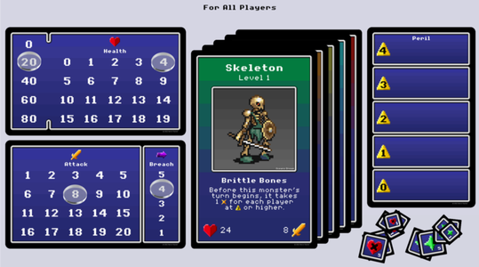

Noneshallpass
Board Game Arena 官方规则文档
Overview
In None Shall Pass, you are not one of the brave four chosen heroes of destiny that saves the world. You are a guard, keeping the Big Bad in its tomb while minion monsters attempt to free it. Stand your ground and defend the seal, and you might just live to retirement.
Setup
Guards
In the beginning, each player chooses a Guard (hero class), two EXP points , and six cards. The cards determine your Guard's attributes and possible actions.

Each card has two actions (for a total of six, corresponding to a ). Each action has instructions, the die roll needed to select that action, and a Peril number. Peril


indicates how dangerous an action is. The more Peril, the more likely you are to be targeted by the monster (if no one else chooses a more dangerous action than you).Each card can also be leveled up (up to level 4) by spending EXP . Leveled-up cards increase the power of abilities and attributes.
Monsters
Monster cards are organized by level, with higher levels representing stronger monsters. Every monster has a name, level , HP , Attack strength (how much HP is taken from the player on an attack), and a unique ability.

Gameplay
If there is no monster on the board (because it's the start of the game or the previous one was defeated), a new one is randomly drawn for the next level.
All players roll their 3 dice, then take turns selecting one of their dice to take a corresponding action. After all the players have taken their turn, the monster attacks the player(s) whose action(s) had the highest value Peril (value ranking).
The monster must be defeated within a certain number of rounds, or it will "breach". If they defeat all the monsters before then, they win.
Player's Turn
The player selects a die and follows its action's instructions. After the action is resolved, their icon is placed on the Peril track based on the action's value.
The represents a bonus action. You may take this action before or after your main action. If you roll , you can take the ) action twice.
If you roll three of a kind, you can take any two actions. Choose the Peril from one.
Once per round, each player with at least one level-4 Guard card may spend one EXP to reroll one die.
Actions
Most actions involve taking or dealing damage. When a monster takes damage, its HP decreases by that amount. A player who takes damage, he/she gains Wounds equal to the damage minus their Armor .
The guard's health indicates how many Wounds they can have before becoming Incapacitated. A player who is Incapacitated at the beginning of an action does not roll dice. Instead, they must perform their ) action (which is always a healing action). They also do not place a die on the Peril track . Incapacitation lasts an entire round, even if you lose enough Wounds before your turn. Similarly, gaining Wounds during the round doesn't Incapacitate you until the next round.
Some actions and events give players EXP which can be spent to improve attributes and actions. At any time, a player may spend EXP equal to the Level Up Cost on one of their Guard cards. That card is flipped or swapped with the card beneath it to reveal the card one level higher.
Monsters
When all players have done their actions, the monster's turn starts. It attacks the player highest on the Peril track . If more than one player is at the same position on the magic track, the damage is divided evenly. Then its Breach level goes down by 1.

If the monster's HP is at zero when it starts its turn, it is defeated. All players receive 1 EXP point . The next level monster takes its place, but does not attack right away.
If the monster's Breach level goes below 1, it has broken through the seal and leaves. The players receive no EXP. The next level monster takes its place.
End of Game
If the fifth monster breaches, the game ends and the players lose.
If the players reduce the final monster's HP to 0, the players win.
Variants
Two Players
Each player gets a second Guard to control. BGA automatically shows the cards and dice for the current Guard's turn, but there is a "Toggle Guards" button at the bottom-left to see the other Guard's cards and dice.
Three Players
One of the players will be an Automaton. The first player decides its actions.